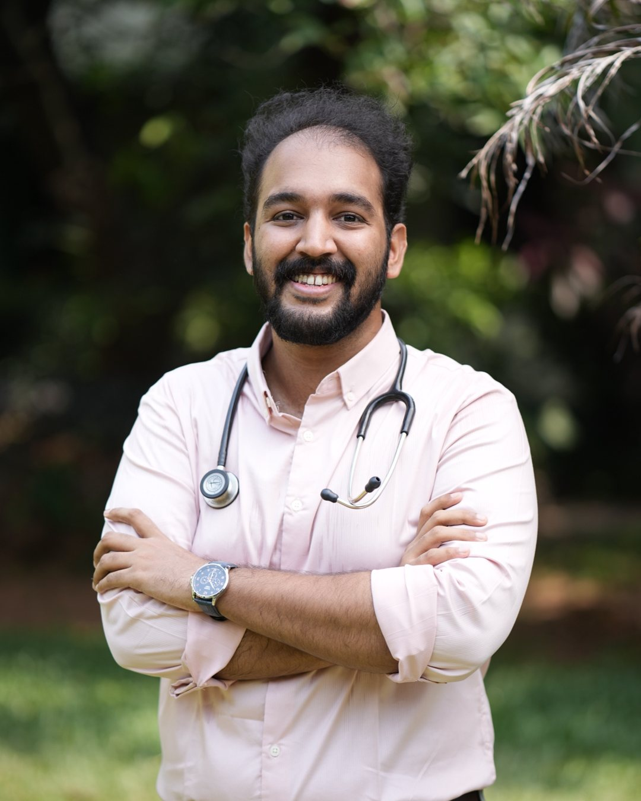

BEFORE I LEAVE MED SCHOOL · RESEARCHPART 2 · 1/14
UNDERGRADUATE RESEARCH · HOW TO
How do you do a cross-sectional study? What worked, and what we got wrong.
Dr. Jerin James and I spent years on this one. Here is how we did it, step by step, and why it never became a paper.

Dr. Sidharth Narayanan
2020 MBBS batch · Calicut Medical College
[PHOTO]
Dr. Jerin James
2020 MBBS batch · Calicut Medical College
2020 MBBS batch · Calicut Medical College01 / 14
BEFORE I LEAVE MED SCHOOL · RESEARCH PART 2 · 2/14
PART 2 · 2/14 WHY WE DID IT
A worthy topic. And a health camp.
Dr. Jerin James and I felt it was a research topic worth our attention. And the opportunity came as a health camp, where we would not otherwise get the data.
We put a lot of time into it. And we did not orient the project well enough.
2020 MBBS batch · Calicut Medical College02 / 14
BEFORE I LEAVE MED SCHOOL · RESEARCHPART 2 · 3/14 THE DESIGN
A cross-sectional study is a snapshot.
You study a population at one point in time. It gives you prevalence. It cannot tell you what caused what.
2020 MBBS batch · Calicut Medical College03 / 14
BEFORE I LEAVE MED SCHOOL · RESEARCHPART 2 · 4/14 STEP 1
Narrow down the topic.
1
WhoWhich population are you studying?
2
HowWhich design, which setting?
3
Parent studiesWhat guidelines or existing studies can you build on?
4
A toolWhat instrument can you actually administer?
2020 MBBS batch · Calicut Medical College04 / 14
BEFORE I LEAVE MED SCHOOL · RESEARCHPART 2 · 5/14 STEP 2
We chose non-communicable diseases.
Then I started searching for templates with questionnaires and everything a study might need.
That is how I stumbled upon the WHO STEPS protocol, and I started building the questionnaire.
2020 MBBS batch · Calicut Medical College05 / 14
BEFORE I LEAVE MED SCHOOL · RESEARCHPART 2 · 6/14 STEP 3
The protocol was ready. The data was not.
WHO STEPS needs more than a questionnaire. It needs anthropometric data and biochemical data too.
We had a protocol, and we were clueless about how to collect that data.
2020 MBBS batch · Calicut Medical College06 / 14
BEFORE I LEAVE MED SCHOOL · RESEARCHPART 2 · 7/14 STEP 4
Then, coincidentally, a health camp.
The then College Union decided to run a health camp. A lot of tests would be done.
Why waste it, if we could assess the risk factors of every student on campus? Guide: look for existing events where your data is already being collected.
2020 MBBS batch · Calicut Medical College07 / 14
BEFORE I LEAVE MED SCHOOL · RESEARCHPART 2 · 8/14 STEP 5
Submit to the Institutional Research Committee.
1
Submit the protocolFull protocol to the IRC.
2
Take the correctionsThe head of the IRC sent corrections. We made them.
3
Periodic reviewAfter certain reviews, we were cleared for the IEC.
2020 MBBS batch · Calicut Medical College08 / 14
BEFORE I LEAVE MED SCHOOL · RESEARCHPART 2 · 9/14 STEP 6
Then the Institutional Ethics Committee.
We took a lot of printouts and submitted a request to the IEC.
I went to the IEC meeting, where the committee members reviewed the proposal. Only after that was the study ready to begin.
2020 MBBS batch · Calicut Medical College09 / 14
BEFORE I LEAVE MED SCHOOL · RESEARCHPART 2 · 10/14 STEP 7
Collect the data. All of it.
We went to each health camp, guided students through it, collected the data and measured their physical parameters.
We had the help of the whole college. And we were sitting on a mountain of data.
2020 MBBS batch · Calicut Medical College10 / 14
BEFORE I LEAVE MED SCHOOL · RESEARCHPART 2 · 11/14 STEP 8
And we were not ready to analyse it.
No ChatGPT or Claude at the time. We worked manually with SPSS, Excel and Google Sheets, and depended on Dr. Ashik, who taught us SPSS at every point.
It took another year and a half to get into the data.
2020 MBBS batch · Calicut Medical College11 / 14
BEFORE I LEAVE MED SCHOOL · RESEARCHPART 2 · 12/14 WHAT WENT WRONG
We did not orient the project well.
Too much data. Unsegmented, without the tools or the team to structure it or publish it. We spread ourselves too thin, and we had not briefed our guide on what we needed.
We did have a guide who had published. We did not orient the project with them well enough.
2020 MBBS batch · Calicut Medical College12 / 14
BEFORE I LEAVE MED SCHOOL · RESEARCHPART 2 · 13/14 THE OUTCOME
An award, and no paper.
The study earned us the KUHS UG Research Award, one of the first from our college. Dr. Jerin James is one of the reasons we could submit the report. We never published it.
| # | PROJECT | OUTPUT | STATUS |
|---|
| 1 | WHO STEPS 1 & 2 risk-factor survey (NCD) | KUHS UG Research Award; presented at national forums and UG conferences | NOT PUBLISHED |
| 2 | Nutritional assessment of cancer patients | Indian J Med Paediatr Oncol, Mar 2026 (2nd author) | PUBLISHED |
| 3 | Metastatic solitary fibrous tumour, parapharyngeal region | Indian J Med Paediatr Oncol, Apr 2025 (6th author) | PUBLISHED |
| 4 | Juvenile justice and recidivism (elective) | Report and forums; not pushed for publication | NOT PUBLISHED |
| 5 | Obesity-driven cardiac mortality, US adults 15 to 44 | JAHA, Oct 2026 (4th author) | PUBLISHED |
| 6 | Retrosternal goitre case series | Ongoing | IN PROGRESS |
| 7 | AI-enabled dataset creation | Working on it now | IN PROGRESS |
| 8 | Peer review: AI in Healthcare, 2023 Year in Review (preprint) | JMIRx Med, Sep 2024 (collaborative live review); my first published credit | PUBLISHED |
2020 MBBS batch · Calicut Medical College13 / 14
BEFORE I LEAVE MED SCHOOL · RESEARCHPART 2 · 14/14 DO IT BETTER
If we did it again:
1
One questionNot every risk factor at once.
2
A paper planKnow the tables and the journal first.
3
Orient your guideWe had one who had published. Brief them on the plan before you collect.
4
A team for the dataSplit the analysis early.
The step-by-step guide is in the article. Next: the electives.
2020 MBBS batch · Calicut Medical College14 / 14